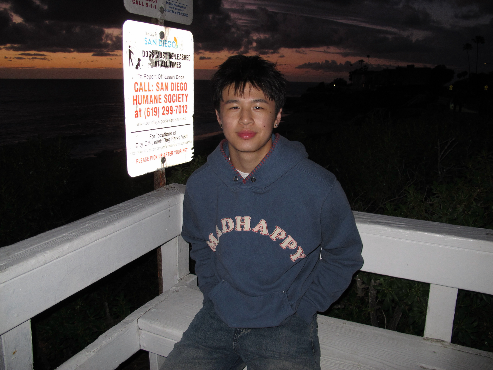
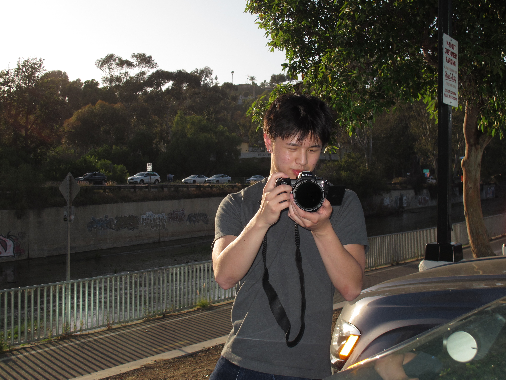
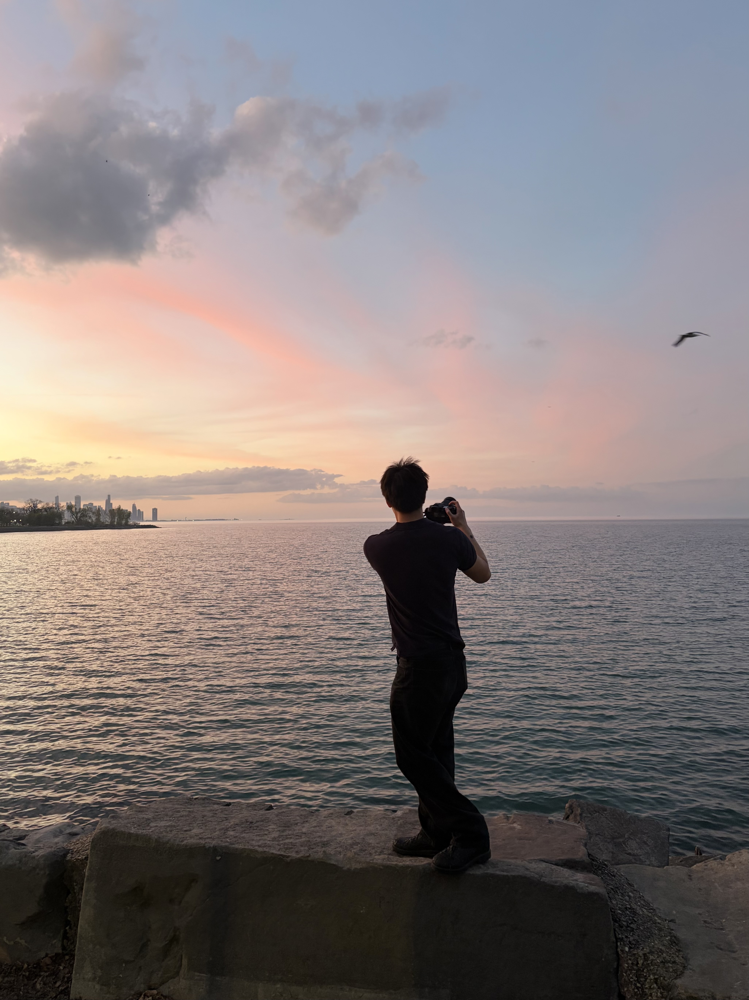
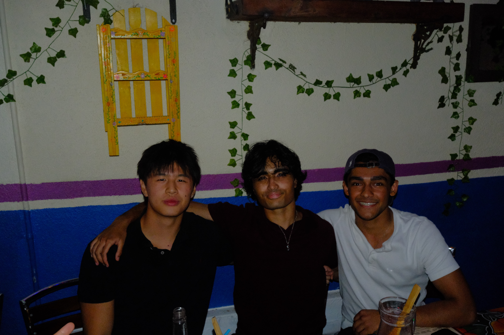

About
Hi, I'm Max Shen,
a student from Vancouver, Canada studying Business and Technology Management at New York University.
I'm passionate about creation and the process of building something from the ground up. For me, that mostly happens through my camera. My work is drawn to color and how it dictates the mood of an image. Moments that feel universal, even to someone who wasn't there. Looking forward, I want to build a career where that same instinct for creativity meets business, tech, and product.